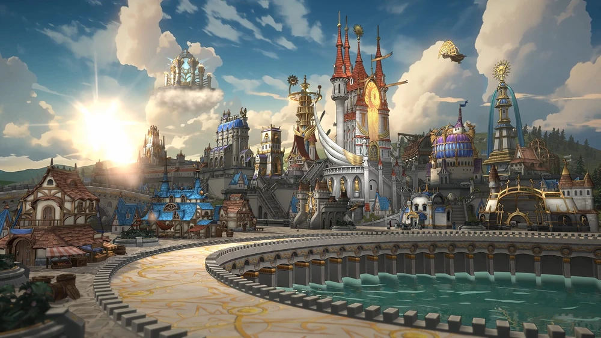
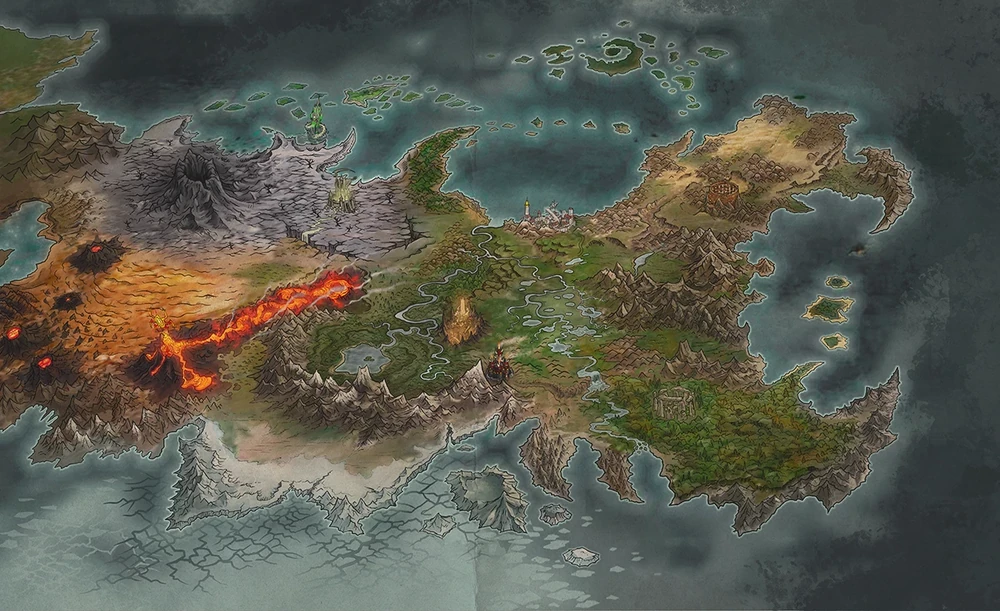
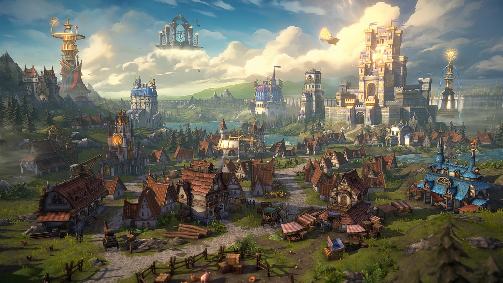

Heroes of Might and Magic: Olden Era — это совсем недавно вышедшая в демо-версию пошаговая стратегия, основанная на классической формуле серии Heroes of Might and Magic. Игра сочетает элементы градостроения, развития героев, пошаговых боёв и глобальной карты приключений.
Цель игрока — управлять замками, собирать ресурсы, нанимать армии, исследовать карту и побеждать противников в тактических сражениях.
События Olden Era происходят на континенте Джадам, где после многовековых войн и магических катастроф возникли шесть крупных фракций. Каждая из них имеет собственный стиль игры, набор существ, заклинаний и особенности развития. Игровой баланс строится на взаимодействии разных школ магии и уникальных умений, которые определяют стратегию каждой стороны.
Здесь же мы поговорим об одной из самых известный и культовых фракций всей линейки игр Heroes of might and magic - Храм
Храм - Фракция света и порядка. Основной стиль игры — укреплённая оборона, поддержка армии и прямое боевое превосходство. Герои Храма используют магию Света, направленную на лечение, повышение морали и защиту союзников. Фракционная способность Вознесение усиливает оставшиеся войска после потерь, превращая жертвы в источник силы. Армия Храма сбалансирована и эффективна как в защите, так и в наступлении.
  
Как не сложно догадаться, огромную роль в этой игре играют Герои, командующие нашей армией, каждый герой уникален и имеет свой способности
На следующей странице будут представлены все герои фракции Храм, а также их характеристики и способности.